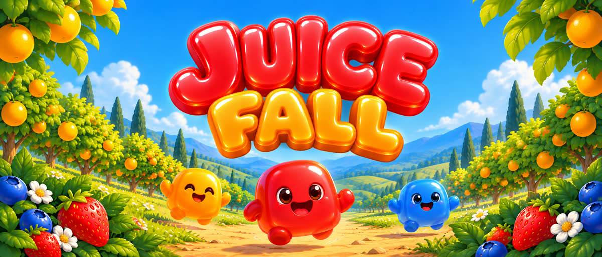
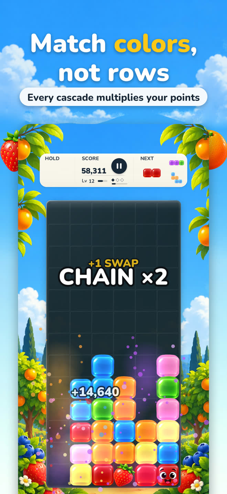
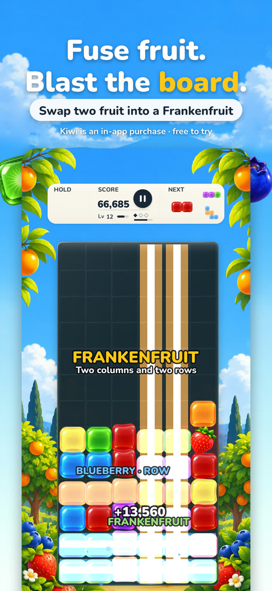
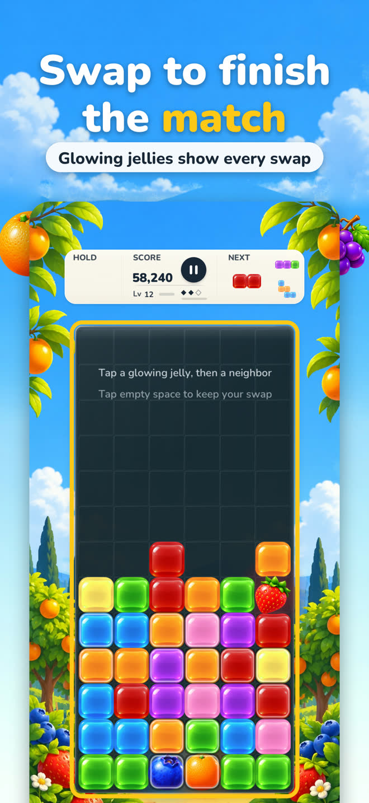
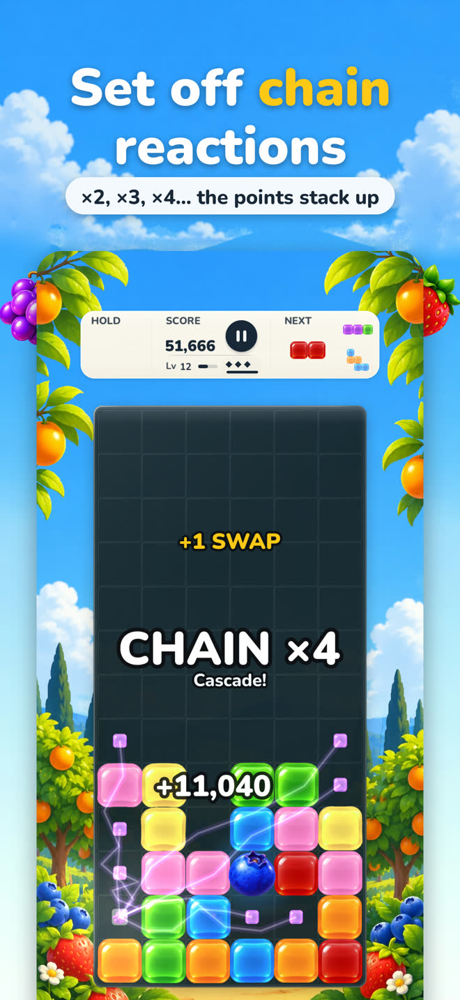
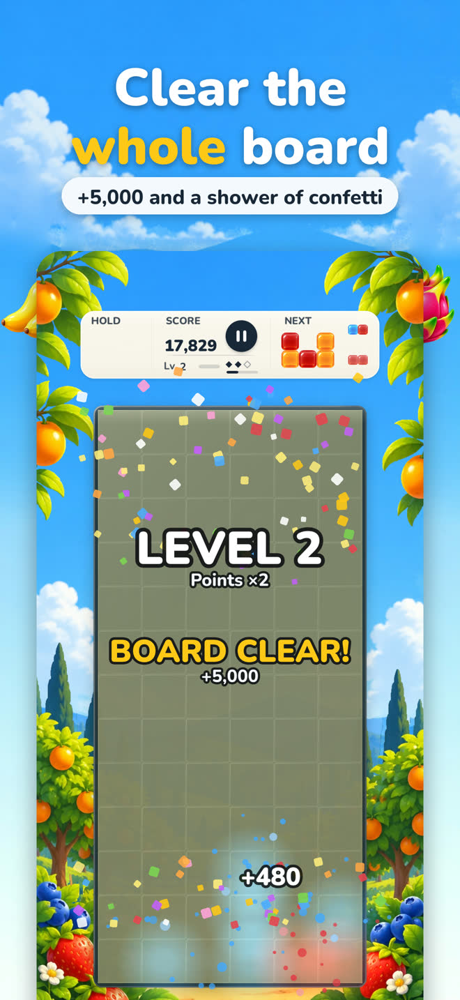
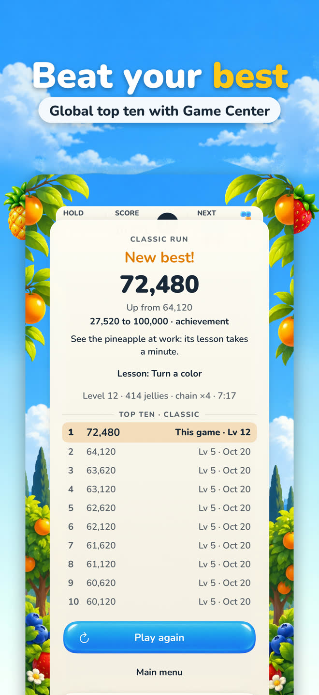
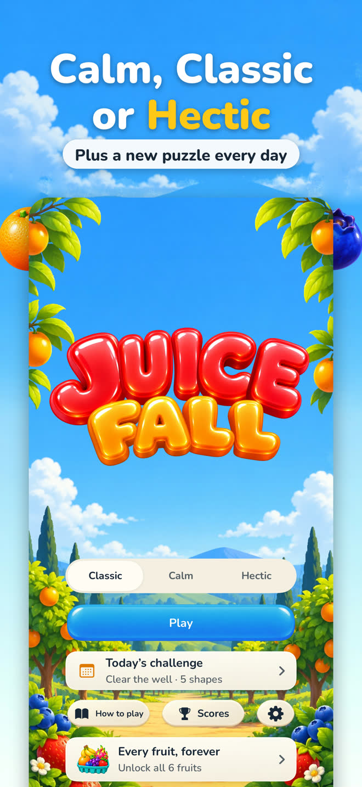
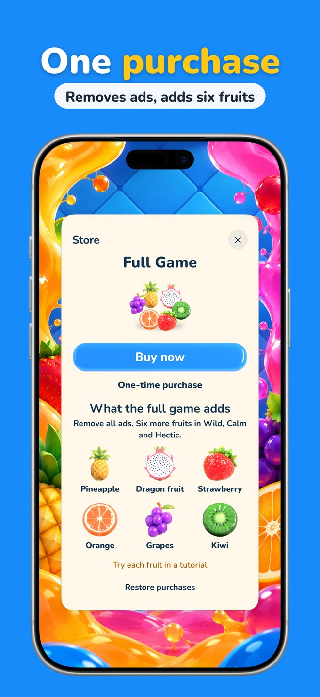

Match colors, not rows.
Juicefall is a falling-jelly puzzle for iPhone. Line up three jellies of one color and they burst into juice, and whatever falls after can match again.
Free · No ads · No subscription · Plays offline








Soft jellies, juicy chains
Jelly shapes drop into a garden well. Slide and turn them, and line up three or more of one color in a row or a column. They burst, the jellies above fall, and a new match sets off the next. Every step of a cascade multiplies your points.
Landings and clears fill the swap meter, and you can bank three swaps. When a shape lands, glowing jellies show every swap that makes a match: tap one, and the chain goes on.
Colors, not rows
Three or more jellies of one color, in a row or a column, burst into juice. Color is what counts, so every drop is a small puzzle.
Cascades that multiply
The jellies above fall straight down and can match again. Every step of a cascade multiplies your points.
Swaps in the bank
Fill the swap meter, bank up to three swaps, and spend one the moment a shape lands to finish a match.
Fruit from shapes
Four in a row make a blueberry that clears its row, four in a column an orange that clears its column, an L or T a strawberry that bursts, five in a line grapes that take a whole color.
Fuse two fruit
Swap two different fruit together and they fuse into a kiwi with both powers, twice as strong. Two of a kind make a super fruit, three times as strong.
Calm, Classic or Hectic
Classic speeds up every level. Calm has no gravity: drop each shape when you're ready. Hectic levels up twice as fast.
A puzzle a day
Reach the goal before the shapes run out. Everyone gets the same well, the same shapes and the same rules each day.
Made for iPhone
Soft jellies at 120 Hz on ProMotion iPhones, Game Center leaderboards and 27 achievements, and your records kept in iCloud.
For everyone, and private
Color symbols, Reduce Motion and VoiceOver, in six languages. No account, no data collected, and it plays offline.
No ads. No subscription. Yours to keep.
Every mode is free, and so are the blueberry and the banana. After your first game, your next five have every fruit, so you can try them all. The orange, strawberry, grapes, pineapple, dragon fruit and kiwi are then one-time purchases, all six together cost less, and Family Sharing is included.